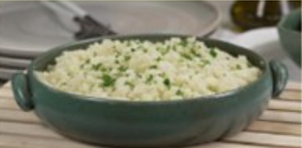

Arroz de Couve-Flor
- Arroz
- Couve-Flor
- Cebola média
- Azeite
Deixe a couve picada. Adicione os ingredientes e refogue bem. Adicione sal, tampe a panela e deixe cozinhar.
Bolo de café

- Farinha de trigo
- Açucar
- Café coado
- Chocolate em pó
- Ovos
Bata o açucar, as gemas eo café. Adicione farinha e choclate e mexa bem. Bata as claras e junte a mistura.
Coxinha de Brigadeiro
- Leite Condensado
- Chocolate em pó
- Manteiga
- Morango
- Chocolate granulado
Junte o leite condensado, chocolate em pó e manteiga. Aqueça no fogo baixo. Envolva os morangos e passe no granulado.